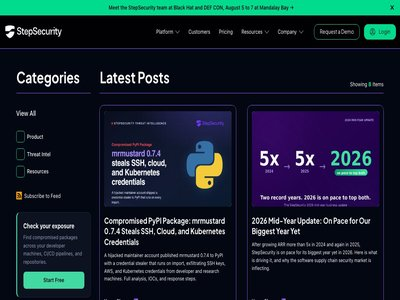

November 27, 2026 · 33 articles

US Air Force cloud platform reportedly hacked in latest federal breach
November 27, 2026
Hackers have reportedly breached the US Air Force's Cloud One computing platform, adding to a recent wave of cyberattacks affecting US government agencies, including the FBI, CI... (BleepingComputer)
Your Firewall Isn't Enough: The Hidden Risk of Unmanaged VMs
November 27, 2026
Forgotten virtual machines, unpatched servers, and excessive access permissions can create security blind spots across IT infrastructure. ISPsystem explains how centralized infr... (BleepingComputer)

Drupal sites are being hijacked, and a follow-up flaw is already under attack
November 27, 2026
Attackers are exploiting a second critical Drupal flaw. Some sites remained vulnerable even after the first patch. (Malwarebytes Labs)
Malwarebytes Antivirus: Get 50% off during Black Friday 2026
November 27, 2026
Malwarebytes' 2026 Black Friday and Cyber Monday sale is now live, offering 50% off security subscriptions for individuals, families, and small businesses, including its antivir... (BleepingComputer)

Japan’s education ministry discloses breach of government procurement system
November 27, 2026
Japan’s education ministry disclosed earlier this week that hackers breached its government procurement system, potentially exposing records containing business information and... (The Record)

FIFA hacked, cybercriminals claim access to sensitive internal records
November 27, 2026
Cybercriminals broke into FIFA’s systems and gained access to “a limited set of personal and business information,” world football’s governing body confirmed on Thursday. “FIFA... (Help Net Security)
Software giant SAP confirms cyber incident amid reports of source code breach
November 27, 2026
German software giant SAP confirmed a cybersecurity incident following reports that hackers infiltrated its software development infrastructure, potentially gaining access to th... (The Record)
Malware steals Gmail messages using a fake Google Sheets extension
November 27, 2026
Remus’s fake Chrome extension can read Gmail after a password change if you sign back in on the infected browser. (Malwarebytes Labs)

Recent Outages Have Economic Causes
November 27, 2026
This essay originally appeared in The Guardian . It’s an expanded version of the one I posted as “ We Get the Infrastructure We Pay For .” It’s been a bad week for our computeri... (Schneier on Security)

Microsoft Store App Found Delivering Vinci RAT Capable of Remote System Control
November 27, 2026
Cybersecurity researchers have disclosed details of a cyber attack in which a threat actor leveraged a Microsoft Store application to deliver a remote access trojan (RAT) called... (The Hacker News)

Lolipop! Breach Exposes Customer Data and Passwords Stored in Plaintext
November 27, 2026
Customer information was exposed across GMO Pepabo's Lolipop! services. The leaked credentials included user-chosen HTTP Basic authentication passwords stored in plaintext. The... (Joho no Todai)
Fake GTA VI PC Downloads Found on GitHub: ClickFix Attack Claims Files Were Scanned
November 27, 2026
Fake GTA VI PC download pages surfaced on GitHub. They claimed the files had been checked for malware while urging users to run code retrieved from outside the repository. (Joho no Todai)

UK Welfare and Pension Services Taken Offline Following Cyber Incident
November 27, 2026
The DWP said that online services had been taken offline as a precaution following a cyber-incident, regular pension and benefit payments have not been affected (Infosecurity Magazine)
Chinese and North Korean state hackers add ARTEX AI framework to their arsenal
November 27, 2026
State-sponsored hacking groups tied to Beijing and Pyongyang have started running the ARTEX pentesting tool in attacks, Microsoft Threat Intelligence warned this week. Published... (Help Net Security)
Eco-Megane Breach Reached External Cloud: Full Recovery for Two Services Targeted for Early February 2027
November 27, 2026
The breach of NTT Smile Energy's Eco-Megane remote solar monitoring service extended to an external cloud environment. Bank account details for some business partners may have b... (Joho no Todai)

In Other News: Tanker Cyberattacks, EU Quantum Act, New VirusTotal Capabilities
November 27, 2026
Noteworthy stories that might have slipped under the radar: RansomwareHelp accused of profiting from ransom payments, USDA payment systems breach, cybersecurity firm Radware hac... (SecurityWeek)
How to Keep Your Security Picture Current When Attackers Move at AI Speed
November 27, 2026
Most security metrics are not built to be used. They are built to be shown. Somewhere between the quarterly review and the next status update, a set of numbers gets assembled th... (The Hacker News)
Drupal warns of new site takeover flaw exploited in attacks
November 27, 2026
The Drupal security team says attackers are exploiting a second critical vulnerability that lets them breach and hijack unpatched websites. [...] (BleepingComputer)
Flight Centre Travel Group warns of customer data breach involving some passport details
November 27, 2026
Travellers who booked accommodation through Flight Centre and several of its leisure brands may have had their names, and in rare cases passport and health details, accessed by... (Help Net Security)
100,000 Potentially Impacted by Colorado Data Breach
November 27, 2026
Hackers breached the digital identification and document storage application myColorado and accessed user-uploaded data. The post 100,000 Potentially Impacted by Colorado Data B... (SecurityWeek)
Hackers Trojanize Official Q-Dir and DesktopOK Downloads to Deliver Remote Access Malware
November 27, 2026
Cybersecurity researchers have disclosed details of a software supply chain attack that has tampered with Q-Dir and DesktopOK installation files distributed via the official Sof... (The Hacker News)
Microsoft pushes emergency hotpatch to fix Windows Server crashes
November 27, 2026
Microsoft has released an emergency hotpatch update to address Windows Server 2025 crashes triggered after installing this month's security hotpatch update (KB5131077). [...] (BleepingComputer)
CyberStrikeAI Creator Shuts Down Open-Source AI Offensive Framework
November 27, 2026
The open source version of CyberStrikeAI has been permanently removed from, but an enterprise version of the AI pentesting tool is still accessible (Infosecurity Magazine)
New NFS2ROOT Linux flaw can let attackers gain root privileges
November 27, 2026
A 12-year-old critical vulnerability in the Linux kernel's Network File System (NFS) server, tracked as CVE-2026-99362, allows remote attackers to gain root privileges. [...] (BleepingComputer)

Support team put in an emergency order for vodka - lots of vodka - to bring PCs back online
November 27, 2026
Some clean-up jobs need powerful stuff (The Register - On-Prem)
Japan Launches Cybersecurity Outreach Team to Contact Companies at Risk of Attack
November 27, 2026
Japan launched an outreach team at its National Cybersecurity Office on November 27. Using threat intelligence from Japan and abroad, the team will contact companies to help the... (Joho no Todai)
The University of Osaka Suspends Disaster Safety Check System After Confirming Email Address Breach
November 27, 2026
The University of Osaka said on November 27 that unauthorized access to an external email delivery service had exposed registered email addresses for students, faculty, and staf... (Joho no Todai)
In 2027, “the agent did it” stops being an excuse
November 27, 2026
Enterprises will come under growing pressure to establish accountability for autonomous AI agents in 2027, with regulators, corporate boards and insurers demanding evidence of h... (Help Net Security)
Product showcase: Norton helps Claude users uncover the telltale signs of fraud
November 27, 2026
The Norton connector for Claude brings the company’s Genie AI-powered scam detection capabilities into the chatbot. Users can submit suspicious emails, text messages, screenshot... (Help Net Security)
Unpatched Cacti Zero-Day Enables RCE in Just Four HTTP Requests via Guest Access
November 27, 2026
Details have emerged about a new zero-day vulnerability in Cacti, an open-source network monitoring tool, that could be exploited to achieve remote code execution. The proof-of-... (The Hacker News)
AI raises new questions about what penetration testing proves
November 27, 2026
AI is becoming an established part of threat-led penetration testing (TLPT), with 81% of surveyed providers using the technology beyond experimentation, according to research fr... (Help Net Security)
Free e-government platform that serves two billion people in ten countries has critical SQL injection bug
November 27, 2026
India’s Digital Infrastructure for Governance Impact and Transformation tool can leak data (The Register - Security)

Risky Bulletin: Hackers breach Erlang and Elixir package manager
November 27, 2026
In other news: FinCEN investigates security breach; 1Password hacked through employee GitHub account; Russia will try to build a GitHub clone. Again. (Risky Business News)
November 26, 2026 · 36 articles
Microsoft: Hackers in China, N Korea using ARTEX AI tool to break into global tech systems
November 26, 2026
Agentic offensive framework automates familiar attack techniques, with weak defenses potentially breached in minutes (The Register - Security)
Google Cloud Requires AI Agents to Access Workspace Through Approved Methods
November 26, 2026
Google Cloud users will soon be required to use Workspace MCP servers or command line interface to connect AI agents to tools like Gmail, Google Drive or Docs (Infosecurity Magazine)
Mitel MiCollab Zero-Days Exploited in Suspected AI-Assisted Attacks
November 26, 2026
Accenture says hackers exploited MiCollab flaws before Mitel’s advisory, likely aided by AI, in a suspected extortion campaign. The post Mitel MiCollab Zero-Days Exploited in Su... (SecurityWeek)
Hackers Exploit 10 Vulnerabilities Across Mitel, Juniper, Vates, and Danfoss Products
November 26, 2026
The U.S. Cybersecurity and Infrastructure Security Agency (CISA) on Wednesday added 10 security flaws to its Known Exploited Vulnerabilities (KEV) catalog, including five vulner... (The Hacker News)
ThreatsDay: 10M NGINX Services at Risk, 250+ Malicious Extensions, AI Server Hijacking + 17 More Stories
November 26, 2026
A website can look perfectly fine to the person running it. Log out, visit the same page, and things might look different. Something similar is happening with browser extensions... (The Hacker News)
Fake paid expert interviews impersonate brands to steal Google logins
November 26, 2026
An ongoing phishing campaign dubbed "GoodGuys" impersonates major brands, including Google, Nvidia, Accenture, and SpaceX, to steal corporate Google and Okta credentials using f... (BleepingComputer)
North Korea-Linked PolinRider Poisons Over 7,600 GitHub Repositories to Spread Malware
November 26, 2026
The threat actors behind the PolinRider campaign have been observed planting a Python loader in GitHub repositories, as evidence emerges that the activity may have started as fa... (The Hacker News)

Linux/EasyShell: MalwareMustDie Identifies One of the Earliest Publicly Documented RATs Built for LoongArch Linux
November 26, 2026
MalwareMustDie analyzes Linux/EasyShell, a Rust implant targeting Linux and macOS, with LoongArch support and stealth features to evade detection. This case began with a shell s... (Security Affairs)
Anthropic built a honeypot to see if AI agents will break out
November 26, 2026
Put something useful just out of reach. How far will Claude go to get it? (Malwarebytes Labs)

AI Agents and Non-Human Identities: The Security Risks and How to Reduce Them
November 26, 2026
The rise of AI in enterprises has expanded the attack surface. Learn how GitGuardian can help you secure non-human identities and prevent unauthorized access. (GitGuardian Blog)
Google Changes API Pricing: Syncovery to End Google Drive Support in Older Versions
November 26, 2026
In response to Google's new API pricing, file sync and backup software Syncovery plans to end Google Drive support in older versions in March 2027. For software that uses shared... (Joho no Todai)
Preinstalled Keenadu malware turns up on 220,000+ Android devices
November 26, 2026
A new Android phone can come out of the box with malware already in its firmware, and the number of such devices detected each month has grown more than 2.5 times over the past... (Help Net Security)
Debian 12 Kernel 6.1.192 Triggers Bluetooth Restart Loops and Reported PC Freezes
November 26, 2026
After a Debian 12 kernel update, the Bluetooth daemon can get stuck in a restart loop, with some PCs freezing. A fix for CVE-2025-21969 is a suspected cause, and Debian has aske... (Joho no Todai)
Phishers Abuse Hugging Face's AI Site Builder to Spoof Big Brands
November 26, 2026
Aikido found 42 phishing pages on Hugging Face Spaces, two-thirds made with its AI site builder (Infosecurity Magazine)
Why New York is banning AI chatbot toys
November 26, 2026
New York’s five-year ban on making, distributing, and selling AI chatbot toys starts February 22, after the holiday shopping season. (Malwarebytes Labs)
1Password Hit by Backend Breach via Hijacked Employee GitHub Account
November 26, 2026
An attacker used a 1Password employee's GitHub account to take customer data, but not vaults (Infosecurity Magazine)
SYS010 malware abuses browser management to spy on Gmail, Outlook
November 26, 2026
A new version of the SYS01 infostealer malware delivered through Meta ads is enrolling browsers into enterprise-style management to force the installation of an extension that s... (BleepingComputer)
UK Border System Helios Lacked an Effective Way to Correct Records: Home Office Reprimanded
November 26, 2026
When the UK's Helios border system went live, frontline staff lacked a proper process for getting inaccurate personal data corrected. The ICO found that the Home Office had brea... (Joho no Todai)
JetBrains Releases Java4Shell (CVE-2026-114938) Fixes; Development JDKs Need Separate Mitigation
November 26, 2026
JetBrains has urged users to update IntelliJ IDEA, PyCharm, and other products. The updates address a vulnerability in the Java runtime bundled with its IDEs, while JDKs used fo... (Joho no Todai)
US agency tracking money laundering is latest casualty in string of federal breaches
November 26, 2026
An intrusion at the US Treasury’s Financial Crimes Enforcement Network (FinCEN) has forced the agency to take some systems offline and extend reporting deadlines for financial i... (Help Net Security)
Most Wanted: The Phishing Kits and Techniques Getting Past Security Controls
November 26, 2026
Every phishing attack has to get past email security, web filtering, and safe browsing before it reaches an employee. Some kits manage that far more often than others, and those... (The Hacker News)
Data recovery firm co-founder accused of cashing in on ransomware victims
November 26, 2026
The co-founder of a Florida data recovery firm has been indicted on charges that he secretly paid ransomware gangs while telling victims his company never did. Juan Ricardo Pala... (Help Net Security)
BeeStation OS 1.5.6-68000 Fixes Critical Vulnerabilities; Users Should Check Update Status
November 26, 2026
Synology has released BeeStation OS 1.5.6-68000 in stages. The update fixes vulnerabilities that could allow unauthorized file access or disrupt services, so users should confir... (Joho no Todai)
Critical Apache Tomcat CVE-2026-133325 Flaw Affects Cluster TLS-PSK Authentication; TLS 1.2 Recommended
November 26, 2026
An authentication flaw has been found in Apache Tomcat cluster communications using TLS 1.3 and a pre-shared key. No fixed release was available as of November 26, and the devel... (Joho no Todai)

Cyprus Becomes Espionage Target for Iranian Hackers
November 26, 2026
A previously undocumented Iranian threat group called "Volant Manticore" is targeting Cypriot organizations as part of an intelligence-gathering effort for Tehran. (Dark Reading)
Black Friday cybersecurity deals 2026: Stay safe, spend less
November 26, 2026
Black Friday is here again, and for once your inbox full of “limited time offer” emails might be worth opening. Every year, security vendors join the sales rush with discounts o... (Help Net Security)
Proxmox 9.3 adds production snapshots for SAN-backed VMs
November 26, 2026
Proxmox Virtual Environment 9.3 adds production support for snapshots on shared LVM storage over iSCSI and Fibre Channel SANs. The open-source virtualization platform also gives... (Help Net Security)
More than 4,400 malicious domains are waiting for holiday shoppers
November 26, 2026
Cybercriminals are positioned to exploit the holiday shopping season through fraudulent storefronts, retailer impersonation, payment fraud and account takeover attacks, accordin... (Help Net Security)

What Two Million Canary Prompts Reveal About AI Supply Chain Security
November 26, 2026
Executive Summary To evaluate the security of the AI supply chain, Dragos seeded approximately two million AI prompts with canary URLs and credentials. The investigation reveale... (Qualys Blog)
13 Malicious NuGet Packages Turn Fake.NET Job Assessments Into Malware Delivery Traps
November 26, 2026
Cybersecurity researchers have discovered 13 malicious NuGet packages that are designed to target Windows .NET developers under the guise of a fake take-home job assessment. "Mo... (The Hacker News)

Introducing Wiz ADR: Strengthening Cloud and AI Detection and Response with Application Context
November 26, 2026
See which functions in your code triggered a runtime alert, use agentic investigation to cut false positives, and automate response down to the exact file and line to fix. (Wiz Blog)
Srsly Risky Biz: America Needs Homegrown Open-Weight Models
November 26, 2026
Your weekly dose of Seriously Risky Business news is written by Tom Uren and edited by Patrick Gray and Amberleigh Jack. This week's edition is sponsored by Ent AI . You can hea... (Risky Business News)
A Feast for AI: What Wiz Agents are Thankful For
November 26, 2026
Grab a slice of Data Pie and pull up a chair. Here’s how Wiz’s Red, Green, and Blue Agents celebrate a quieter, smarter security season. (Wiz Blog)
Windows Update Reoffers Intel NUC Driver 1.0.0.38 After Removal Following WinRing0 Detection
November 26, 2026
Testing on an 11th-generation Intel NUC found Microsoft Defender detecting a vulnerable driver. Even after the related package was removed, Windows Update offered the same versi... (Joho no Todai)

Make post-quantum cryptography updates routine with AWS-LC
November 26, 2026
As your organization plans upgrades to post-quantum cryptography (PQC), you should also think about cryptographic agility to more easily update algorithms used to protect your d... (AWS Security Blog)

What is Strategic Threat Intelligence? | Recorded Future
November 26, 2026
Strategic threat intelligence provides a bird’s-eye view of an organization’s threat landscape, helping high-level strategists make better business decisions. (Recorded Future)
November 25, 2026 · 51 articles

CVE-2026-134070 - Improper input sanitization in the AWS Config remediation runbook AWSConfigRemediation-EnableSystemsManagerSessionManagerAuditLogsToS3
November 25, 2026
Bulletin ID: 2026-203-AWS Publication Date: 11/25/2026 11:30 AM PST Description: AWS Systems Manager Automation provides AWS-managed runbooks that customers can run directly or... (AWS Security Bulletins)

Rapid7 Named a Leader in the 2026 Gartner® Magic Quadrant™ for Integrated Security Operations Center Systems
November 25, 2026
Recognized for Completeness of Vision and Ability to Execute. We are proud to share that Rapid7 has been recognized as a Leader in the 2026 Gartner® Magic Quadrant™ for Integrat... (Rapid7 Blog)

What defenders need to know about ARTEX, the agentic AI framework threat actors abuse
November 25, 2026
The AI-powered penetration testing framework ARTEX has been abused by threat actors like Storm-0940, Storm-3358, Onyx Sleet, Pearl Sleet, Crystal Typhoon, and Salt Typhoon to ac... (Microsoft Security Blog)

CISA Adds 10 Known Exploited Vulnerabilities to Catalog
November 25, 2026
CISA has added 10 new vulnerabilities to its Known Exploited Vulnerabilities (KEV) Catalog , based on evidence of active exploitation. CVE-2023-25914 Danfoss AK-SM 800A Series P... (CISA Current Activity)
Gatwick drop-off customers' personal data exposed in supplier breach
November 25, 2026
AutoPay login and vehicle records affected, alongside limited payment information and customer service emails (The Register - Security)
Com-Affiliated Hackers Hijack Cloud Accounts via Vishing for Data Theft and Extortion
November 25, 2026
Palo Alto Networks Unit 42 has disclosed that it's tracking and has responded to "numerous waves of vishing attacks" orchestrated by Com-affiliated threat actors since August 20... (The Hacker News)

After FBI Alert on ARTEX, CISOs Report What Worked Against AI-Run Attacks: Cloud Security Alliance CISO Community Releases “The Third Wave”
November 25, 2026
Organizations must empower autonomous, machine-speed security responses; expand CISO authority to contain threats immediately; and rapidly adopt new defensive technologies to ke... (Cloud Security Alliance)
Plagiarism Checker Turnitin Investigating Cyberattack
November 25, 2026
The edtech company says the systems are fully operational and safe to use while it investigates the incident. The post Plagiarism Checker Turnitin Investigating Cyberattack appe... (SecurityWeek)
Your AI Coding Agent Just Leaked a Secret. Bots Found It on Docker Hub in 8 Seconds
November 25, 2026
Bots used AWS keys planted in Docker Hub images within 7.86 seconds. AI coding agent config files are now carrying real secrets into those same layers, because .gitignore does n... (GitGuardian Blog)
GT13: AI-Assisted Hackers Target 22 Organizations Through Check Point Servers
November 25, 2026
GreyNoise tracks GT13, an unattributed, probably AI-assisted campaign that hit 22 organizations via Check Point management servers. It may still be running. GreyNoise detailed a... (Security Affairs)
Hackers Exploited CVSS 10.0 Hex.pm RCE Flaw to Compromise 6 Package Registry Servers
November 25, 2026
An attacker ran operating system commands on Monday on six production servers of Hex.pm, the package registry that Elixir and Erlang developers fetch their dependencies from. Th... (The Hacker News)
Palo Alto Networks Patches Fragnesia Flaw Used to Root Firewalls
November 25, 2026
A China-linked hacking group chained PHP2Shell with Fragnesia in AI-assisted attacks that hit 25 servers. The post Palo Alto Networks Patches Fragnesia Flaw Used to Root Firewal... (SecurityWeek)

Securing Employees’ AI Use Requires a Unified Architecture
November 25, 2026
(CrowdStrike Blog)

Three Attacks, Zero Exploits in Microsoft 365
November 25, 2026
Learn how three real-world attacks turn ordinary user actions into full Microsoft 365 compromise, and what to fix before they land in your inbox. (Huntress Blog)
ICYMI: October 2026 @AWS Security
November 25, 2026
Welcome to this month’s AWS Security news! Organizations need current information about AWS Security developments to maintain their cloud security. This monthly digest covers ke... (AWS Security Blog)

PolinRider Malware Force-Pushed Into AsyncAPI, CircuitVerse and Open Food Facts Pull Requests
November 25, 2026
PolinRider malware was force-pushed into AsyncAPI, CircuitVerse and Open Food Facts pull requests and ran in CircuitVerse's release CI. How it works, IOCs, and how to check your... (StepSecurity Blog)
Secure agentic access to AWS with Enterprise-Managed Authorization
November 25, 2026
AWS Sign-In is introducing support for Enterprise-Managed Authorization (EMA) using the Identity Assertion JWT Authorization Grant (ID-JAG), enabling organizations to securely a... (AWS Security Blog)
Reduce operational overhead by migrating from AWS CloudHSM to AWS KMS
November 25, 2026
AWS Key Management Service (AWS KMS) supports the security certifications, algorithms, and performance that most AWS CloudHSM workloads require. Organizations that migrate from... (AWS Security Blog)
The security of US water systems is even leakier than we thought
November 25, 2026
And intruders don't always need to exploit bugs to break in (The Register - Security)

Oh, is it Thanksgiving? I hadn’t noticed!
November 25, 2026
In true Thanksgiving fashion, David has a few thank-yous to give to the cybersecurity community (and a few choice words for threat actors). (Cisco Talos)
Planning for 99.99 percent availability with the Amazon Cognito Plus feature plan
November 25, 2026
Amazon Cognito handles sign-in and access control for users, AI agents, and microservices with managed user directories, social and enterprise federation, and passwordless sign-... (AWS Security Blog)
Australia passes tough legislation requiring big tech to preempt foreseeable harms
November 25, 2026
The Digital Duty of Care Act sailed through Australia's Parliament. It will mandate that online providers establish protocols to protect users from threats of violence and rape... (The Record)
Microsoft's NTLM security changes trip up third-party logins
November 25, 2026
It's not our fault if you've implemented it wrong (The Register - Security)
US Anti-Scam Surge Hits 800 Defendants and 29 Scam Compounds
November 25, 2026
DOJ's anti-scam surge has targeted over 800 defendants while the FBI has hit over 29 scam compounds (Infosecurity Magazine)
Attackers Target.NET Developers With Poisoned Job Assessments
November 25, 2026
Researchers discovered 13 malicious NuGet packages as part of a fake recruitment campaign that spreads malware and gives attackers access to developers' machines. (Dark Reading)
Two Newly Disclosed GeoServer Vulnerabilities Under Attack
November 25, 2026
Attackers are probing GeoServer instances for two high-severity flaws that can be chained with other bugs for unauthenticated RCE. The post Two Newly Disclosed GeoServer Vulnera... (SecurityWeek)
It's a Bot World. We're Just Living in It
November 25, 2026
Bot detection has become a losing game. Security teams need to limit privileged access for humans and their machine counterparts equally. (Dark Reading)
More Pentests Without More Pentesters: Where AI Safely Helps
November 25, 2026
Penetration testers spend a significant portion of their engagements on documentation, reporting, and other tasks outside of testing. PentestPad explains how AI can reduce this... (BleepingComputer)

The AI Threat Horizon: Why Speed, Edge AI and Baselines Are Our Best Defense
November 25, 2026
Unit 42 examines the evolution of AI-driven cyberattacks and outlines proactive defense strategies for security teams. The post The AI Threat Horizon: Why Speed, Edge AI and Bas... (Palo Alto Networks Unit 42)
Cyber Insurers See New Divide: AI Defense 'Haves' & 'Have Nots'
November 25, 2026
Dark Reading Confidential Episode 23: Cyber insurers share their view of the AI-driven threat landscape and how mounting challenges are putting pressure on both sides of the pol... (Dark Reading)
AI agents found an unpatched flaw after being told to “break in”
November 25, 2026
AI agents discovered a previously unknown vulnerability and later used it to take control of a university server. (Malwarebytes Labs)
ShinyHunters Claims Comeback, New Inception Group Rejects Alleged Ties
November 25, 2026
An account tied to ShinyHunters announced the group’s return, as Okta spots possible links between Inception and ShinyHunters hackers. The post ShinyHunters Claims Comeback, New... (SecurityWeek)

Introducing Search for Agents
November 25, 2026
Flip one toggle to make your site searchable by AI agents - complete with automatic content indexing, a discoverable search API, and native HTTP QUERY support. (Cloudflare Blog)
Our 2026 Cybersecurity Predictions: What We Got Right, What We Got Wrong, and What Changed
November 25, 2026
Rapid7’s annual Security Predictions webinar returns on December 10, bringing our experts together to explore what the year ahead could hold for cybersecurity. Before sharing ou... (Rapid7 Blog)
Ground Truth: CISO Matt Martin on Building a Real Security Program Without an Enterprise Budget
November 25, 2026
Matthew Martin is Chief Information Security and Privacy Officer at Western Carolina University. The post Ground Truth: CISO Matt Martin on Building a Real Security Program With... (SecurityWeek)
Suspected ransomware attack disrupts cancer treatments, surgeries at Guadeloupe hospital
November 25, 2026
France’s national cybersecurity agency is investigating a suspected ransomware attack that impaired the computer systems of the University Hospital of Guadeloupe, forcing doctor... (The Record)
Never Let the Model See the Secret: Zero Data Retention Is Not Enough
November 25, 2026
Nearly 2 million bait prompts. Three breached AI providers. Stolen AWS keys tested within hours. Dragos showed that Zero Data Retention is a promise, not a control. Here is how... (GitGuardian Blog)

How AI App Builders Leak Their Own Credentials
November 25, 2026
Executive summary: AI app builders give generated apps owner-level access The Orca Research Pod found the same architectural mistake in multiple independent AI app builder platf... (Orca Security Blog)
Electrolux Smart Boilers in Ukraine Connect to Russian Servers, Raising Privacy Concerns
November 25, 2026
Researchers found Electrolux-branded smart boilers connecting to Russian servers, raising concerns about household data and privacy. A router in Ukraine recorded a water heater... (Security Affairs)
Hackers Exploit Two GeoServer Flaws as Researchers Warn of Unauthenticated RCE Chains
November 25, 2026
Threat actors are actively exploiting two newly patched security flaws in GeoServer, according to watchTowr. The vulnerabilities in question are CVE-2026-120705 and CVE-2026-129... (The Hacker News)
Two exposed databases held over 3.5 billion records
November 25, 2026
Researchers found stolen passwords, session cookies and children's school records sitting in two open databases. (Malwarebytes Labs)
Tracking Incidents of Hacking Using AI Tools
November 25, 2026
Daniel Meissler is tracking incidents of AI-enhanced hacking, and the offensive harnesses the hackers are using. (Schneier on Security)
Securing Grandma's groceries with Pierre Cadieux
November 25, 2026
Pierre takes us back to his early days on help desks in the 90s, where learning to correlate logs between Windows and Unix systems sparked the curiosity that eventually led him... (Cisco Talos)
Ransomware Attacks Surge 23% in October Following Record Quarter
November 25, 2026
The continued rise in ransomware attacks may reflect a new cyber environment, NCC Group researchers have warned (Infosecurity Magazine)
UK Authorized Push Payment Losses Surge 22% as Fraudsters Steal £660m
November 25, 2026
Authorized push payment (APP) fraud increased 22% annually in the first half of the year (Infosecurity Magazine)
Maritime industry faces growing cyber threats as 50 ships targeted
November 25, 2026
US authorities investigate suspected cyberattacks on up to 50 commercial ships, with Iran and Russia under scrutiny and Fortinet flaws involved. The United States is investigati... (Security Affairs)
Hackers reportedly breached CIA intelligence analysis system
November 25, 2026
Unknown attackers have reportedly breached an open-source intelligence analysis system at the US Central Intelligence Agency (CIA) [...] (BleepingComputer)
This could mess with Thanksgiving, says VMware as it drops third critical patch bundle in a week
November 25, 2026
Four more critical vulns, including another unauthorized access flaw in vCenter (The Register - Security)

BerriAI LiteLLM Guardrail Sandbox Escape RCE
November 25, 2026
What is the Vulnerability? CVE-2026-40217 is a critical arbitrary-code-execution vulnerability in BerriAI LiteLLM, a widely used open-source LLM proxy/gateway. LiteLLM's guardra... (FortiGuard Labs)
Apache Axis RCE in Confluence Data Center & N-able N-central
November 25, 2026
What is the Vulnerability? CVE-2026-90436 is a critical unsafe-reflection vulnerability (CWE-470) in Apache Axis 1.x, the legacy SOAP web-services library. Because Axis instanti... (FortiGuard Labs)

ISC Stormcast For Wednesday, November 25th, 2026 (Wed, Nov 25th)
November 25, 2026
(SANS ISC)